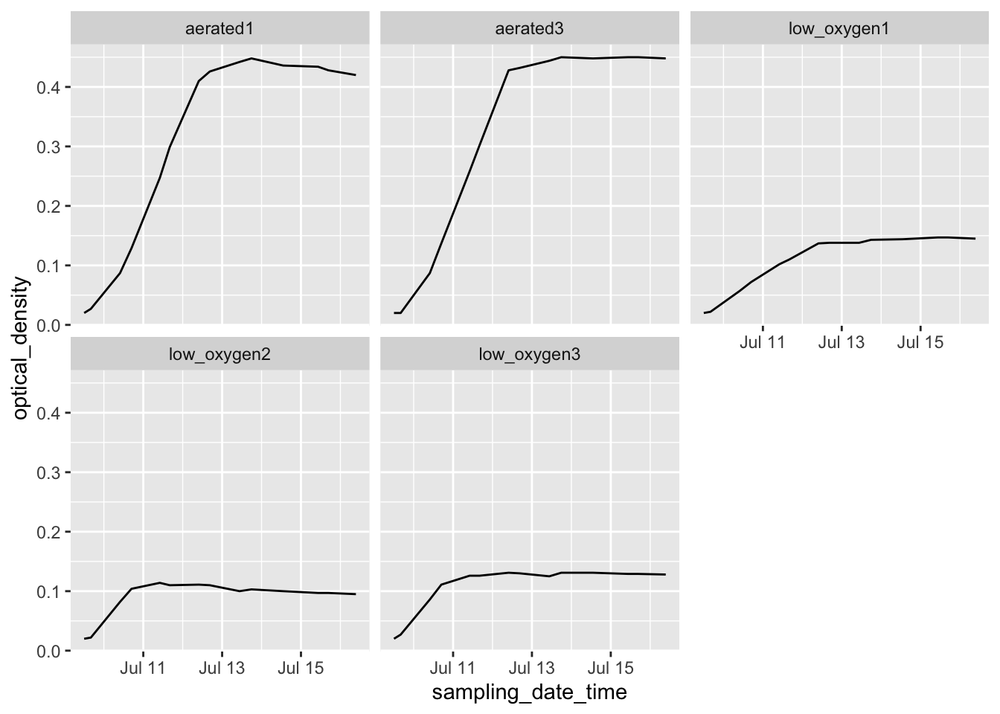

2.5 Example: Creating a template for “tidy” data collection
We will walk through an example of creating a template to collect data in a “tidy” format for a laboratory-based research project, based on a research project on drug efficacy in murine tuberculosis models. We will show the initial “untidy” format for data recording and show how we converted it to a “tidy” format. Finally, we will show how the data can then easily be analyzed and visualized using reproducible tools.
Objectives. After this module, the trainee will be able to:
- Understand how the principles of “tidy” data can be applied for a real, complex research project;
- List advantages of the “tidy” data format for the example project
In the last module, we covered three principles for designing tidy templates for data collection in a biomedical laboratory, motivated by an example dataset from a real experiment. In this module, we’ll show you how to apply those principles to create a tidier template for the example dataset from the last module. As a reminder, those three principles are:
- Limit the template to the collection of data.
- Make sensible choices when dividing data collection into rows and columns.
- Avoid characters or formatting that will make it hard for a computer program to process the data.
It is important to note that there’s no reason that you can’t continue to use a spreadsheet program like Excel or Google Sheets to collect data. The spreadsheet program itself can easily be used to create a simple template to use as you collect data. In fact, we’ll continue using a spreadsheet format in the rest of this module and in the next one as we show how to redesign the data collection for this example experiment. It is important, however, to think through how you will arrange that template spreadsheet to make it most useful in the larger context of reproducible research.
2.5.1 Example data—Data on rate of bacterial growth
Here, we’ll walk through an example using real data collected in a laboratory experiment. We described these data in detail in the previous module. As a reminder, they were collected to measure the growth rate of Mycobacteria tuberculosis under two conditions—high oxygen and low oxygen. They were collected from five test tubes that were measured regularly over one week for bacteria growth using a measure of optical density. Figure 2.11 shows the original template that the research group used to record these data.

Figure 2.11: Example of an Excel spreadsheet used to record and analyze data for a laboratory experiment. Annotations highlight where data is entered by hand, where calculations are done by hand, and where embedded Excel formulas are used. The figures are created automatically using values in a specified column.
In the previous module, we described features that make this template “untidy” and potentially problematic to include in a larger pipeline of reproducible research. In the next few sections of this module, we’ll walk step-by-step through changes that you could make to make this template tidier. We’ll finish the module by showing how you could then easily design a further step of the analysis pipeline to visualize and analyze the collected data, so that the advantages of real-time plotting from the more complex spreadsheet are not missed when moving to a tidier template.
2.5.2 Limiting the template to the collection of data
The example template (Figure 2.11) includes a number of “extra” elements beyond simple data collection—all the elements outside rows 1–15 of columns A–I. Outside this area of the original spread, there are a number of extra elements, including plots that visualize the data, summaries generated based on the data (rows 16–18, for example), notes about the data, and even a macro (top right) that wasn’t involved in data collection but instead was used by the researcher to calculate the initial volume of inoculum to include in each test tube. None of these “extras” can be easily read into a statistical program like R or Python—at best, they will be ignored by the program. They can even complicate reading in the cells with measurements (rows 1–15 of columns A–I), as most statistical programs will try to read in all the non-empty cells of a spreadsheet unless directed otherwise.
A good starting point, then, would be to start designing a tidy data collection template for this experiment by extracting only the content from the box in Figure 2.3. This would result in a template that looks like Figure 2.12.

Figure 2.12: First step in designing a tidy data collection template for the example project. A template has been created that focuses only on the raw data, removing all extra elements like plots, notes, macros, and summaries.
Notice that we’ve also removed any of the color formatting from the spreadsheet. It is fine to keep color in the spreadsheet if it will help the research to find the right spot to record data while working in the laboratory, but you should make sure that you’re not using it to encode information about the data—all color formatting will be ignored when the data are read by a statistical program like R.
While the template shown in Figure 2.12 has removed a lot of the calculated values from the original template, it has not removed all of them. Two of the columns are still values that were determined by calculation after the original data were collected. Column B and column D both provide measures of the length of time since the start of the experiment, and both are calculated by comparing a measurement time to the time at the start of the experiment.
The time since the start of the experiment can easily be calculated later in the analysis pipeline, once you read the data into a statistical program like R. By delaying this step, you can both simplify the data collection template (requiring fewer columns for the research in the laboratory to fill out) and also avoid the chance for mistakes, which could occur both in the hand calculations of these values and in data entry, when the researcher enters the results of the calculations in the spreadsheet cell. Figure 2.13 shows a new version of the template, where these calculated columns have been removed. This template is now restricted to only data points originally collected in the course of the experiment, and has removed all elements that are based on calculations or other derivatives of those original, raw data points.
Figure 2.13: Second step in designing a tidy data collection template for the example project. This template started from the previous one, but removed columns that were hand-calculated and then entered by the researcher in the previous template. This version has removed all calculated values on the template, limiting it to only the original recorded values required for the experiment.

2.5.3 Making sensible choices about rows and columns
The second principle is to make sensible choices when dividing data collection into rows and columns. There are many different ways that you could spread the data collection into rows and columns, and in this step, you can consider which method would meet a reasonable balance between making the template easy for the researcher in the laboratory to use to record data and also making the resulting data file easy to incorporate in a reproducible data analysis pipeline.
For the example experiment, Figure 2.3 shows three examples that we can consider for how to arrange data collection across rows and columns. All three build on the changes we made in the earlier step of “tidying” the template, which resulted in the template shown in Figure 2.13.
![Examples of ways that data collection could be divided into rows and columns in the example template. Panel A shows an example where date and time are recorded in different columns. Panel B is similar to Panel A, but in this case, date and time are recorded in a single column. Panel C shows a classically 'tidy' data format, where each measurement date-time is repeated for each of the five test tubes, and columns give the test tube ID and absorbance measurement at that time for that tube (only part of the data is shown for this format, while remaining rows are off the page). While Panel C provides the 'tidiest' format, it may have some practical constraints when used in a laboratory setting. For example, it would require more data entry during data collection (since date-time is entered five times at each measurement time), and its long format prevent it all from being seen at once without scrolling on a computer screen.](figures/growth_curve_column_options.png)
Figure 2.14: Examples of ways that data collection could be divided into rows and columns in the example template. Panel A shows an example where date and time are recorded in different columns. Panel B is similar to Panel A, but in this case, date and time are recorded in a single column. Panel C shows a classically ‘tidy’ data format, where each measurement date-time is repeated for each of the five test tubes, and columns give the test tube ID and absorbance measurement at that time for that tube (only part of the data is shown for this format, while remaining rows are off the page). While Panel C provides the ‘tidiest’ format, it may have some practical constraints when used in a laboratory setting. For example, it would require more data entry during data collection (since date-time is entered five times at each measurement time), and its long format prevent it all from being seen at once without scrolling on a computer screen.
Panel A (an exact repeat of the template shown in Figure 2.13) shows an example where date and time are recorded in different columns. Panel B is similar to Panel A, but in this case, date and time are recorded in a single column. Panel C shows a classically “tidy” data format, where each measurement’s date-time is repeated for each of the five test tubes, and columns give the test tube ID and absorbance measurement at that time for that tube (only part of the data is shown for this format, while remaining rows are off the page).
In this example, the template that may be the most reasonable is the one shown in Panel B. While Panel C provides the “tidiest” format, it has some practical constraints when used in a laboratory setting. For example, it would require more data entry during data collection (since date-time is entered five times at each measurement time), and its long format prevent it all from being seen at once without scrolling on a computer screen. When comparing Panels A and B, the template in Panel B has an advantage. The information on date and time are useful together, but not individually. For example, to calculate the time since the start of the experiment, you cannot just calculate the difference in dates or just the difference in times, but instead must consider both the date and time of the measurement in comparison to the date and time of the start of the experiment. As a result, at some point in the data analysis pipeline, you’ll need to combine information about the date and the time to make use of the two elements. While this combination of two columns can be easily done within a statistical program like R, it can also be directly designed into the original template for collecting the data. Therefore, unless there is a practical reason why it would be easier for the researcher to enter date and time separately, the template shown in Panel B is preferable to that shown in Panel A in terms of allowing for the “tidy” collection of research data into a file that is easy to include in a reproducible pipeline. Figure 2.15 shows the template design at this stage in the process of tidying it, highlighting the column that combines date and time elements in a single column. In this version of the template, we’ve also been careful about how date and time are recorded, a consideration that we’ll discuss more in the next section.

Figure 2.15: Third step in designing a tidy data collection template for the example project. This template started from the previous one, but combined collection of the date and time of the measurement into a single column and revised the format to include all date elements and to prevent automatic conversion by the spreadsheet program.
2.5.4 Avoiding problematic characters or formatting
The third principle is to avoid characters or formatting that will make it hard for a computer program to process the data. There are a number of special characters and formatting conventions that can be hard for a statistical program to handle. In the example template shown in Figure 2.15, for example, the column names include spaces (for example, in “Date and time”), as well as parenthese (for example, in “VA 001 (A1)”). While most statistical programs have tools that allow you to handle and convert these characters once the data are read in, it’s even simpler to use simpler column names in the original data collection template, and this will save some extra coding further along in the analysis pipeline. Two general rules for creating easy-to-use column names in a data collection template are: (1) start each column name with a letter and (2) for the rest of the column name, use only letters, numbers, or the underscore character ("_“). For example,”aerated1" would work well, but “1–aerated” would not.
Within the cell values below the column names, there is more flexibility. For example, if you have a column that gives the IDs of different samples, it would be fine to include spaces and other characters in those IDs. There are a few exceptions, however. A big one is with values that record dates or date-time combinations. First, it is important to include all elements of the date (or date and time, if both are recorded). For example, the year should be included in the recorded date, even if the experiment only took a few days. This is because statistical programs have excellent functions for working with data that are dates or date-times, but to take advantage of these, the data must be converted into a special class in the program, and conversion to that class requires specific elements (for example, a date must include the year, month, and day of month). Second, it is useful to avoid recording dates and date-times in a way that results in a spreadsheet program automatically converting them. Surrounding the information about a date in quotation marks when entering it (as shown in Figure 2.15) can avoid this. Finally, consider using a format to record the date that is unambiguous and so less likely to have recording errors. Dates, for example, are sometimes recorded using only numbers—for example, the first date of “July 9, 2019” in the example data could be recorded as “7/9/2019” or “7/9/19,” to be even more concise. However, this format has some ambiguity. It can be unclear if this refers to July 9 or to September 7, both of which could be written as “7/9.” For the version that uses two digits for the year, it can be unclear if the date is for 2019 or 1919 (or any other century). Using the format “July 9, 2019,” as done in the latest version of the sample template, avoids this potential ambiguity.
Figure 2.16 shows the template for the example experiment after the column names have been revised to avoid any problematic characters. This template is now in a very useful format for a reproducible research pipeline—the data collected using this template can be very easily read into and processed using further statistical programs like R or Python.
Figure 2.16: Example of an simpler format that can be used to record and analyze data for the same laboratory experiment as the previous figure. Annotations highlight where data is entered by hand. No calculations are conducted or figures created—these are all done later, using a code script.

2.5.5 Moving further data analysis to later in the pipeline
Once you have created a “tidy” template for collecting your data in the laboratory, you can create a report template that will input that data and then provide summaries and visualizations. This allows you to separate the steps (and files) for collecting data from those for analyzing data. Figure 2.17 shows an example of a report template that could be created to pair with the data collection template shown in Figure 2.16.

Figure 2.17: Examples of an automated report that can be created to quickly generate summaries and estimates of the data collected in the simplified data collection template for the example experiment.
To create a report template like this, you can use tools for reproducible reports from statistical programs like R and Python. In this section, we’ll walk through how you could create the report template shown in Figure 2.17. We will be using the programming language R, including RMarkdown, which is R’s main tool for creating reproducible reports. If you have never used R or RMarkdown before, you’ll find it useful to learn some more about their use to help in creating these types of reproducible reports from collected data. Numerous excellent (and free) resources exist to help learn R. One of the best is the book “R for Data Science” by Hadley Wickham and Garrett Grolemund. It is available in print, as well as free online at https://r4ds.had.co.nz/.
Older text
2.5.6 Example—Data on rate of bacterial growth
The first set of data are from a study on the growth of Mycobacterium tuberculosis. The goal of this study was to compare growth yield and doubling time of Mycobacterium tuberculosis grown in rich medium under two assay conditions. One set of cultures were grown in tubes with a low culture volume relative to a large air head space to allow free oxygen exchange. A second set of cultures were grown in tubes filled to near capacity, resulting in limited air head space which has been shown elsewhere to limit oxygen availability over time. The caps on both sets of cultures were sealed to restrict air exchange during the study.
Some background information is helpful in understanding these example data, especially if you have not conducted this type of experiment. The increase in the cell size and cell mass during the development of an organism is termed growth. It is the unique characteristics of all organisms. The organism must require certain basic parameters for their energy generation and cellular biosynthesis. The growth of the organism is affected by both physical and nutritional factors. There are multiple methods by which growth can be measured, but the use of closed tissue culture tubes and a spectrophotometer to track increases in optical density (absorbance at 600 nm) over time offers several advantages: 1) it is less subject to technical error and contamination, 2) read out is fast and simple, 3) growth as measure by increased absorbance (turbidity) is directly proportional to increases in cell mass. There are four distinct phases of bacterial growth. Lag phase, log (exponential phase), stationary phase, death phase. From these data, bacterial generation times (doubling time) during the exponential growth phase can be calculated.
\[ \mbox{Doubling time} = \frac{log(2)(t_1 - t_2)}{log(OD_{t_1} - log(OD_{t_2}))} \] where \(t_1\) and \(t_2\) are two time points and \(OD_{t_1}\) and \(OD_{t_2}\) are the optical densities at the two time points (all \(log\)s are natural in this case).
An excel-based workbook (Figure 2.11) was created to allow the student performing the work to (1) calculate the amount of initial inoculum (cell culture) to add to each tube to begin the study, (2) record the raw data absorbance measurements, (3) graph the data on both a log and linear scale, and (4) calculate doubling time in two phases of growth using the equation listed above. Columns were added to allow the student to track the time (column A), the difference in time (hours) between each time point in which data were collected (column B), the date on which data were gathered (column C), and the time in hours for each data point from the start of the study for graphing purposes (column D). Absorbance data for each sampling timepoint were listed in Columns E-F (high oxygen conditions; VA001 A1, A3) or columns G-I (limited oxygen conditions; VA001 L1, L2, L3).
What the researchers found appealing about the format of this Excel sheet was the ease with which the student could accomplish the study goals. They also cited transparency of the raw data and ease with which additional sampling data points could be added. The data being graphed in real time and the inclusion of a simple macro to calculate doubling time, allowed the student to see tangible differences between the two assay conditions. This was also somewhat problematic as the equation to calculate doubling time was based on anchored time points built into the original spreadsheet resulting in two different results that were not properly linked to the correct data time points.
Data that are saved in a format like that shown in Figure 2.11, however, are hard to read in for a statistical program like R, Perl, or Python. In this format, the raw data (the time points each observation was collected and the optical density for the sample at that time point) form only part of the spreadsheet. The spreadsheet also includes notes, automated figures, and cells where an embedded formula runs calculations behind the scenes.
Instead of this format, we can design a simpler format to collect the data. We’ll remove all figures and calculations, and instead save those to perform in a code script. Figure ?? shows an example of a simpler format for collecting the same data. In this case, all the “extras” have been stripped out—this only has spaces for recording times points and the observed optical density at those time points. In later chapters, we’ll show how a code script can be used to input these data into R and then perform calculations and create figures. By separating out the steps of data recording from data analysis, you can ensure that all steps of analysis are clearly spelled out (and can be easily reproduced with other similar data) through a code script. Note that you can still collect the data in this simpler format using a spreadsheet program, if you’d like—Figure 2.16 shows the data collection set up to be recorded in a spreadsheet program, for example. Within the spreadsheet, you can choose to save the data in a plain text format (a csv [comma-separated value] file, for example).
In this new data collection format, the data are not completely “tidy.” This is because there is still some information included in the column names that we might want to use for analysis and plotting—namely, the different experimental group names (e.g., “aerated1,” “low_oxygen1”). However, there is a balance in creating data collection spreadsheets. They should be in a format that is easy to read into an interactive programming environment like R, as well as in a format that will be easy to convert to a truly “tidy” format once they are read in. However, it’s okay to balance these needs with aims to make the data collection spreadsheet easy for a researcher to use.
The example shown in Figure 2.16 is designed to be easy to use when collecting data. All data points for a single collection time are grouped together on a single row. When a researchers collects data for one time point, he or she can easy confirm visually that all the experimental groups have been measured for that time point. This format still makes it easy to read the data into an interactive programming environment, however, since they are in a clear two-dimensional format, with column names in the first row and values in the remaining rows. The removal of extraneous elements—like embedded formulas, the results of hand calculations or automated calculations, and annotations through notes or colored highlighting—remove barriers when reading the data into more sophisticated software. Once the data are read into R, there can be converted into a truly tidy data format with just a few command calls.
The following code shows an example of how easy it is to read data into R in the simplified format shown in Figure 2.16. It also shows how a few lines of code can then be used to convert the data into a truly “tidy” format, and how easily sophisticated plots can then be made with the data.
library("tidyverse")
library("readxl")
# Read data into R from the simplified data collection template
growth_curve <- read_excel("data/growth_curve_data_in_excel (1)/growth curve data_GR.xls",
sheet = "simplified_template")
# Example of data
growth_curve## # A tibble: 14 × 6
## sampling_date_time aerated1 aerated3 low_oxygen1 low_oxygen2 low_oxygen3
## <dttm> <dbl> <dbl> <dbl> <dbl> <dbl>
## 1 2019-07-09 12:00:00 0.02 0.02 0.02 0.02 0.02
## 2 2019-07-09 16:05:00 0.027 0.02 0.022 0.022 0.027
## 3 2019-07-10 09:50:00 0.087 0.087 0.057 0.082 0.086
## 4 2019-07-10 16:50:00 0.129 0.137 0.072 0.104 0.111
## 5 2019-07-11 10:03:00 0.247 0.258 0.102 0.114 0.126
## 6 2019-07-11 16:07:00 0.299 0.302 0.11 0.11 0.126
## 7 2019-07-12 09:48:00 0.41 0.428 0.137 0.111 0.131
## 8 2019-07-12 16:30:00 0.426 0.432 0.138 0.11 0.13
## 9 2019-07-13 10:35:00 0.442 0.444 0.138 0.1 0.125
## 10 2019-07-13 17:52:00 0.448 0.45 0.143 0.103 0.131
## 11 2019-07-14 13:10:00 0.436 0.448 0.144 0.1 0.131
## 12 2019-07-15 10:27:00 0.434 0.45 0.147 0.097 0.129
## 13 2019-07-15 16:42:00 0.428 0.45 0.147 0.097 0.129
## 14 2019-07-16 09:28:00 0.42 0.448 0.145 0.095 0.128# Convert to a fully tidy format
growth_curve <- growth_curve %>%
pivot_longer(-sampling_date_time,
names_to = "experimental_group",
values_to = "optical_density")
# How the data look after this transformation
growth_curve## # A tibble: 70 × 3
## sampling_date_time experimental_group optical_density
## <dttm> <chr> <dbl>
## 1 2019-07-09 12:00:00 aerated1 0.02
## 2 2019-07-09 12:00:00 aerated3 0.02
## 3 2019-07-09 12:00:00 low_oxygen1 0.02
## 4 2019-07-09 12:00:00 low_oxygen2 0.02
## 5 2019-07-09 12:00:00 low_oxygen3 0.02
## 6 2019-07-09 16:05:00 aerated1 0.027
## 7 2019-07-09 16:05:00 aerated3 0.02
## 8 2019-07-09 16:05:00 low_oxygen1 0.022
## 9 2019-07-09 16:05:00 low_oxygen2 0.022
## 10 2019-07-09 16:05:00 low_oxygen3 0.027
## # … with 60 more rows# Example of how easily sophisticated plots can be created with data in this format
growth_curve %>%
ggplot(aes(x = sampling_date_time, y = optical_density)) +
geom_line() +
facet_wrap(~ experimental_group) In later chapters, we’ll discuss R’s “tidyverse,” a collection of tools within R that facilitate analyzing and visualizing data once they’ve been read into R. Here, we only aim to give an example of how little R code is needed to create useful output from the data, with the only requirement for gaining this power being that the data need to be collected in a format that is “tidy” or close enough to easily read into R.
2.5.7 Example—Data on bacteria colony forming units
2.5.9 Issues with these data sets
- Issues related to using a spread sheet program
- Embedded macros
- Use of color to encode information
- Issues related to non-structured / non-two-dimensional data
- Added summary row
- Multiple tables in one sheet
- One cell value is meant to represent values for all rows below, until next non-missing row
- Issues with data being non-“tidy”
2.5.10 Final “tidy” examples
2.5.11 Options for recording tidy data
Spreadsheet program.
Spreadsheet-like interface in R.